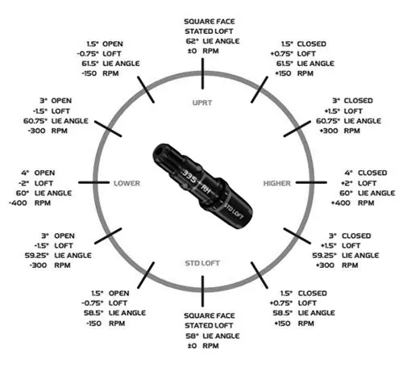

The Qi10 driver sits in the middle of a three-model family: Qi10 LS for low spin and workability, Qi10 Max for maximum forgiveness, and the standard Qi10 in between, built to blend distance and forgiveness without leaning hard toward either extreme. It launched in January 2024 with a straightforward pitch: lower CG, higher MOI than its predecessor, and a construction built almost entirely around carbon.
What's actually inside it
The Qi10 Max is the sibling most associated with the "10,000 MOI" headline, TaylorMade's highest combined moment of inertia at the time of release. The standard Qi10 uses the same construction philosophy in a slightly smaller address shape, aimed at golfers who want most of that forgiveness without the Max's larger footprint.
Reading the loft sleeve
Every Qi10 driver ships with an adjustable hosel, and the settings can look like a lot at once if you haven't used one before. The sleeve rotates the shaft slightly inside the head, which changes three things together: loft, lie angle, and face angle. Turning it toward a "closed" or "lower" setting reduces loft and tends to reduce spin; turning it toward "open" or "higher" adds loft and spin back in. TaylorMade's own reference chart lays out exactly what each position does to those three numbers, plus the expected shift in spin rate, so a fitter or a curious golfer can see the tradeoff before ever hitting a ball.

Island Greens Pick
No head-to-head needed here, this is a club that speaks for itself. The standard Qi10 sits in the sweet spot of TaylorMade's own lineup: nearly all of the Max's forgiveness, without needing the largest head in the family to get there.
From the bag
I've used this driver enough to attest to its greatness. It's my friendly little monster. All it takes is a nice easy swing and it's sending the ball on a long journey. Very forgiving, instantly likeable. And the blue club face is genuinely one of the best-looking things in my bag.
Before Qi4D replaced it at the start of 2026, Qi10 was the driver in the bag for Scottie Scheffler, Rory McIlroy, and Tommy Fleetwood, confirmed by both TaylorMade's own tour materials and PGA Tour's official equipment reporting.
Curious how TaylorMade's current flagship stacks up against Callaway and Ping? Read Qi4D vs. Quantum Max vs. G440 K.